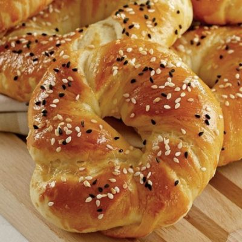
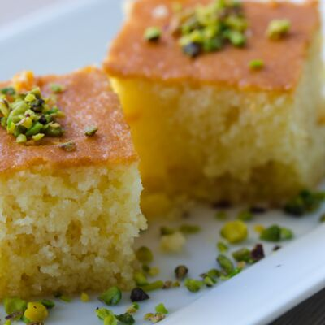

1) Kunefe

Künefe is a crispy cheese-filled dessert made with kadayıf (kah-dah-YUF'), which is a traditional shredded wheat dessert with pistachio filling. Künefe is served hot out of the oven so the cheese is soft and stringy. Künefe is cooked and served in a very shallow, round metal pan that's specially designed for making this dessert. It's so delicious that Turkish people and tourists alike keep coming back for more.
2) Lokum
Lokum are succulent, sugary cubes from Turkey based on a gel of starch and sugar. Traditionally, lokum is flavored with rose water, lemon, bergamot orange, mastic, or mint, but the Turkish favorite remains a lokum of plain jelly combined with pistachios.
3) Baklava
baklava, Turkish, Greek, and Middle Eastern rich pastry of phyllo (filo) dough and nuts. Phyllo is a simple flour-and-water dough that is stretched to paper thinness and cut into sheets, a process so exacting that it is frequently left to commercial manufacturers. Baklava is among the most common sweets to serve for special occasions in modern-day Turkey and Greece and some Balkan countries.
4) Halva
halvah, also spelled helva, any of several confections of Balkan and eastern Mediterranean origin, made with honey, flour, butter, and sesame seeds or semolina, pressed into loaf form or cut into squares. Halvah is made with a variety of colourings and flavourings. Its texture is characteristically gritty and crisp. In some versions, sugar and nuts, often pignolia nuts or blanched almonds, are substituted for the more traditional honey and sesame seeds. In either case, the sweet syrup is added to a sautéed mixture of butter, nuts, and farina. These are blended thoroughly, then covered and cooked until all the syrup is absorbed. The candy is often sprinkled with cinnamon or served warm or cold with whipped cream.
5) Mozzaik Pasta

Mozaik pasta is a Turkish no-bake cake made with buttermilk and chocolate sauce. The concept of this cake is simple: mix cookies with chocolate sauce, put everything in a mold and let cool. The biscuits will absorb the sauce and the preparation will freeze. Very often, walnuts, pistachios or hazelnuts are added to the preparation. Once the cake is ready, it can be covered with a layer of chocolate ganache to decorate it and get an even more gourmet mozaik pasta! When cutting the cake, you must obtain a "mosaic" effect due to the arrangement of the cookies. Therefore, each slice of this cake is unique!
6) Güllaç
Güllaç is a traditional Turkish dessert made with thin layers of wheat pudding, various fresh fruits, and drizzled with syrup. It's often served during Ramadan, religious holidays, and special occasions.
7) Kayısı Tatlısı

Kayısı Tatlısı is a popular sweet in Turkish cuisine that is made from dried apricots. The apricots are simmered in sugar syrup until they become soft and juicy, giving the dessert its signature texture. The sugar syrup used in Kayısı Tatlısı is usually flavored with lemon and cinnamon, adding a delicious burst of flavor to the sweet treat. Kayısı Tatlısı is often served as a snack or dessert, especially during the hot summer months when apricots are in season. It's a simple yet satisfying dish that is loved by people of all ages. The soft, juicy apricots and the sweet, sticky syrup make it a perfect treat to enjoy after a meal or as a mid-day snack. Whether you prefer your Kayısı Tatlısı warm or chilled, it's a sweet treat that is sure to satisfy your sweet tooth.
8) Kazan Dibi

Kazan Dibi is a traditional Turkish dessert made with caramelized milk pudding, originating from the city of Konya in central Turkey. It is made by cooking milk, sugar, and flour over low heat until it forms a thick and creamy pudding, which is then left to cool and set. The pudding is typically served cold and has a unique, caramelized flavor due to the caramelization of the milk and sugar during the cooking process. Kazan Dibi is a popular dessert in Turkey and is often enjoyed as a sweet treat after a meal or as a snack.
9) Şekerpare

Şekerpare is a traditional Turkish sweet that consists of soft, fluffy dough soaked in syrup. The dough is made with simple ingredients such as flour, sugar, and yogurt, and is often shaped into a round or oval shape before being soaked in a sugar syrup flavored with lemon and cinnamon. Şekerpare is a popular dessert in Turkey and is often served as a sweet treat after a meal or as a snack. The soft, fluffy texture and sweet, sticky syrup make it a satisfying treat that is enjoyed by people of all ages.
10) Ekmek Kadayıfı

Ekmek Kadayıfı is a traditional Turkish dessert made with thin, shredded pastry dough called kadayıf, sweetened and flavored with sugar, lemon, and cinnamon. It is layered with chopped walnuts, drenched in syrup and topped with clotted cream or ice cream. The dessert is often baked in the oven until the kadayıf becomes golden and crisp, creating a delicious contrast between the crisp exterior and the soft, sweet filling. Ekmek Kadayıfı is a popular dessert in Turkey, and is often served during religious holidays and special occasions.
11) Katmer
Katmer is a traditional Turkish pastry made with phyllo dough and ghee, typically filled with clotted cream or cheese. The phyllo dough is layered and brushed with melted ghee, then filled with the creamy filling. The pastry is then rolled and baked until golden brown. The result is a flaky and crispy pastry with a sweet and creamy filling. Katmer is a popular breakfast food in Turkey and is often served with tea or coffee.
12) Simit
Simit is a traditional Turkish sesame seed-covered bread that is a staple food in Turkey. It is made from a circular shaped dough that is coated in molasses and then covered with sesame seeds. The dough is then baked until golden brown, creating a crunchy exterior and a soft, chewy interior. Simit is a popular street food in Turkey and is often enjoyed as a breakfast food or snack, either plain or filled with cheese, chocolate, or jam.
13) Acma
Acma is a traditional Turkish bread that is similar to bagels. It is made from a dough of flour, yeast, sugar, and water that is shaped into a circular form, then boiled and baked. The dough is typically topped with sesame seeds or nigella seeds before being baked, giving it a crunchy exterior. Acma is a popular breakfast food in Turkey and is often served with cheese or honey. It can also be used as a sandwich roll or as a base for various Turkish dishes.
14) Keskul
Keskül is a traditional Turkish dessert made with cornstarch, sugar, and milk. It is a type of pudding that is thickened with cornstarch and flavored with cinnamon and lemon zest. The pudding is typically served chilled, garnished with ground almonds and cinnamon. Keskül is a popular dessert in Turkey, particularly during the summer months, and is often enjoyed as a light and refreshing treat after a meal.
15) Kabak Tatlisi

Kabak Tatlisi is a Turkish dessert made from pumpkin. It is sliced, fried, and then cooked with sugar, cinnamon, and sometimes cloves. The result is a sweet, soft and flavorful dessert that is commonly enjoyed during the fall and winter months.
16) Portakalli Kurabiye

Turkish orange cookies (portakallı kurabiye) are a cross between a small cake and a cookie and they are de-li-cious! A kurabiye is slightly crumbly with crispy edges but its inside is oh so very soft, it will melt in your mouth.
17) Ayva Tatlisi

Ayva tatlısı is a winter dessert from Turkey prepared by poaching quinces in sugar and water. Spices such as cloves and cinnamon are added to the sugar and water to enhance the flavor, and the pectin in the quince seeds serves as a thickener. The slow, lengthy cooking process transforms the hard and astringent quince into a soft and delicate ruby-colored dessert with a distinctive rosy scent. Once cooled, ayva tatlısı is served with a dollop of clotted cream or kaymak, and can also be dusted with a sprinkling of walnuts or pistachios.
18) Cezerye
Cezerye is a semi-gelatinous traditional Turkish dessert made from caramelised carrots, shredded coconut, and roasted walnuts, hazelnuts, or pistachios. Cut into matchbox-sized rectangular chips it is served on special occasions. It originated from the Eastern Mediterranean Turkish province of Mersin.
19) Kadayif
Kadayıf, or also known as kadaifi, is one of those desserts that can deceive you. Drenched in syrup, you may expect a soft dough, but once you take your first bite you’ll realize the texture is delightfully crispy, a texture enhanced by the nuts inside. If you order kadayıf in Turkey, you’ll be astonished by how many different ways it can be prepared. Though in Greece, the version is rolled up into small pockets.
20) Tavuk Gogsu

Tavuk Gögsü is a Turkish dessert made with meat from a chicken breast. It is very white with a stringy consistency. The core ingredients are chicken, milk, sugar, and a thickener such as cornstarch or rice flour. Flavourings include salt and cinnamon.
21) Fırında Sütlaç

The creamiest rice pudding has to be this Turkish rice pudding, traditionally known as Firin Sutlac. The reason...a lot of milk! WIth a caramelized topping, this is a good cold dessert for those times when you want something to prepare ahead and just leave in the fridge until needed.
22) Revani
Revani is a classic dessert that has been present in Turkish cuisine since the Ottoman period. It is said to have been given its name when the Ottomans conquered the city of Yerevan in what is today Armenia. The Persian name for the cake, revani, is also used by the Greek culture. This dessert has been adapted by many Mediterranean and Middle Eastern cultures. It is called basbousa in Arabic and shamali in Armenian.
23) Tulumba
Tulumba is a traditional Turkish dessert that is typically made with flour, sugar, butter, milk, and eggs. Visually, they look like Turkish churros. It is a pastry that is deep-fried and then soaked in sweet syrup. The syrup can be made with sugar, water, lemon juice, and cinnamon. Tulumba is a popular dessert in Turkey. You can find these in most cafes and from street vendors. Tulumba can taste overly sweet for those without a sweet tooth. Therefore, they go extremely well with strong Turkish coffee.
24) Ashure
Ashure is a Turkish dessert that is made from wheat, dried fruits, nuts, and spices. It is a type of pudding that is usually eaten around the time of the Muslim holiday of Ashura. This dessert is believed to have been created by Noah after the great flood. It is also called Noah’s Ark pudding. Ashure is considered to be a symbol of thanksgiving and is often shared among family and friends.
25) Muhallebi
Muhallebi is like the vegetarian version of Tavuk Göğsü. It is a milk or rice pudding that has similar consistency as the chicken breast. You can easily top it with dried fruits or nuts for more flavor and texture.The pudding is served cold and can be found in most Turkish restaurants.